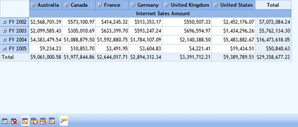

The OLAP grid toolbar showcases the important features of the OLAP grid such as conditional formatting, changing grid layouts, and value cell ToolTip configuration.
|
[C#] // To Show OLAP Grid Toolbar. this.OlapGrid1.ShowToolBar = true; |
|
[VB] 'To Show OLAP Grid Toolbar. Me.OlapGrid1.ShowToolBar = True |
Toolbar Items
The following are the items available in the grid toolbar.
Table 18: Toolbar Items
|
Icon |
Option |
Description |
|
|
Apply Conditional Formatting |
Launches Conditional Formatting dialog to conditionally format grid cells. |
|
|
Clear Formatting |
Clears the formatting applied in the OLAP Grid. |
|
|
Normal Grid Layout |
Sets the Normal layout of the OLAP grid. |
|
|
Excel-like Layout |
Sets the Excel-like layout of the OLAP grid. |
|
|
Normal Top Summary Grid Layout |
Sets the Normal Top Summary layout of the OLAP grid. |
|
|
No Summaries Layout |
Sets the No Summaries layout of the OLAP grid. |
|
|
Value Cell Tooltip |
Shows/hides the value cell ToolTip. |

Figure 33: OLAP Grid Toolbar
Table 19: ShowToolBar Property
|
Property |
Description |
Type |
Data Type |
|
ShowToolBar |
Enables/disables the toolbar containing options to edit the OlapGrid control. |
Server side |
boolean |
Sample Link
A sample demo is available at the following link:
..\Syncfusion\EssentialStudio\<VersionNumber>\BI\Web\OlapGrid.Web\Samples\3.5\Appearance\OlapGrid ToolBar Demo